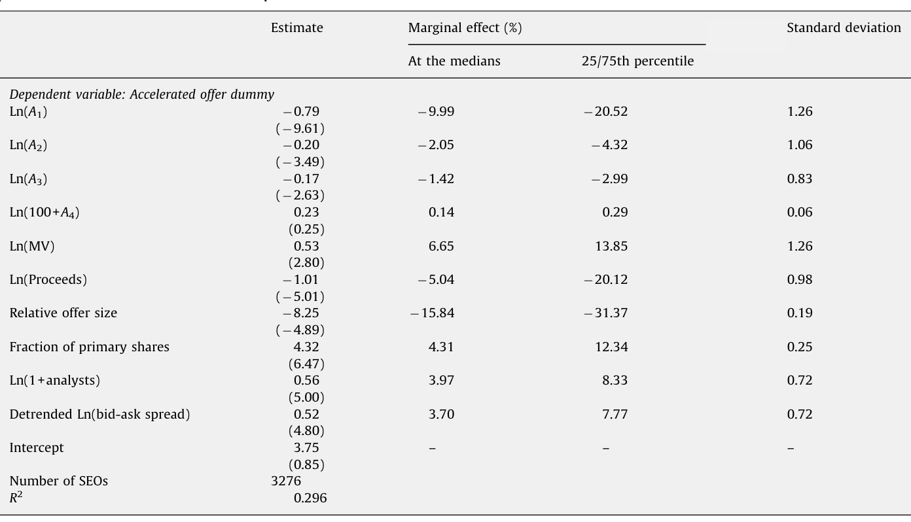
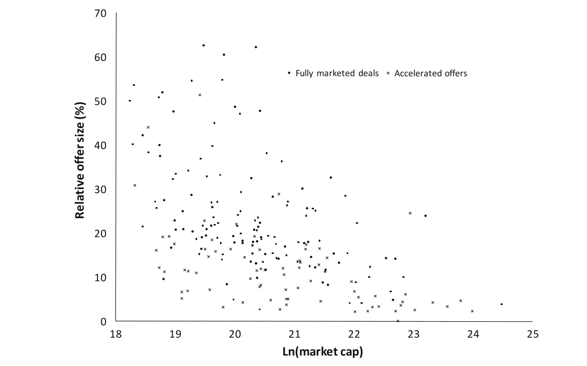
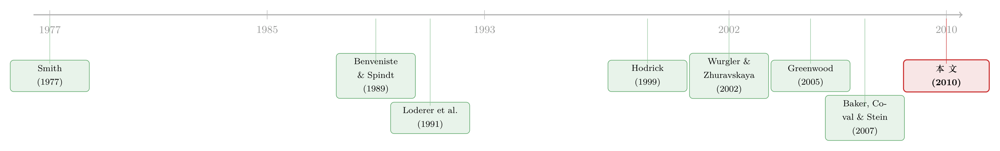

多花一笔钱买「需求」：增发时，企业为什么宁愿请投行去吆喝
本文读的是 Gao & Ritter (2010, Journal of Financial Economics)：增发新股时，企业本可以选一种便宜的「加速发行」，却有大量企业偏要花更高的费用做「完全营销发行」。作者给出的解释是——投行的营销（路演）本质上是在创造需求、压平发行人股票的短期需求曲线。于是「需求弹性」不再是外生给定的，而成了企业可以花钱去改变的内生选择变量。实证上，发行前需求曲线越陡（越缺乏弹性）、发行规模越大，企业越倾向于完全营销；而完全营销之后，发行人的短期需求弹性确实出现了一次约 30% 的暂时性抬升。
1 一个看上去「不划算」的选择
先说一个让人有点意外的事实。
一家美国公司想增发股票（seasoned equity offering, SEO）募资，摆在它面前的，大体上有两条路。一条叫加速发行（accelerated offer）——包括买断交易（bought deal）和加速簿记发行（accelerated bookbuilt offer）：投行连夜竞标、24 到 48 小时之内把活干完，不做路演，承销费便宜。另一条叫完全营销发行（fully marketed offer，又称传统簿记发行）：投行带着公司管理层，花上两周时间一家一家地去拜访机构投资者，开路演（road show）、建订单簿、再定价，承销费要贵得多。
按理说，钱当然是越省越好。可现实是，相当一部分企业主动选了那条更贵的路。在本文 1996–2007 年、3,276 例 SEO 的样本里，完全营销发行长期是主流；即便加速发行从 2000 年后份额猛增——按 Bortolotti, Megginson & Smart (2008) 的口径，到 2004 年全球已有过半的 SEO 募资额走加速通道——可仍有大量公司宁可多掏腰包。
这就奇怪了：既然有便宜的，为什么还要买贵的？
这正是本文的出发点。作者 Xiaohui Gao 和 Jay Ritter 没有把「贵」简单地归结为投行的认证（certification）或信息生产，而是换了一个更朴素、也更被既有文献忽略的角度去看投行的工作：营销，本身就是在「创造需求」。
2 把「营销」翻译成一条需求曲线
要理解这篇文章，得先接受一个在资产定价里其实早有共识、但在 SEO 文献里一直被「悄悄放在一边」的前提：股票的短期需求曲线是向下倾斜的，而且不同股票的弹性（demand elasticity）还不一样。
关于「需求曲线为什么会向下倾斜」，文献里给过一长串理由：信息不对称（Benveniste and Spindt, 1989）、投资者意见分歧（Miller, 1977；Hong and Stein, 2007）、只有有限数量的投资者在关注这只股票（Merton, 1987）、以及缺乏近似替代品（Wurgler and Zhuravskaya, 2002；Greenwood, 2005）。指数成分股的增删事件几乎无一例外地伴随显著的价格冲击，就是这条曲线向下倾斜的直接证据。
接受了这个前提，本文真正的那一步「翻译」才登场：
路演和营销，做的事情是把新的投资者「拉进场」、把分散的意见「捏拢」——于是需求曲线向外移动、并且变得更平（更有弹性）。
作者用一张供需图（论文 Fig. 1）把这件事讲透。发行前，市场在 P1 出清。增发意味着供给从 X1 增加到 X2。如果不做营销，短期需求曲线不动，沿着这条陡峭的曲线滑下去，股价被砸到 P2；如果企业花钱营销，需求曲线被推出去、还被压平，新的供需交点落在一个更高的发行价 P* 上。P* 与 P2 之间、乘以发行股数，那块阴影矩形，就是营销给发行人带来的毛收入增量。
到这里，一个自然的推论就浮现了：
- 发行前需求曲线越陡（越缺乏弹性），营销能把价格往上抬的空间越大；
- 发行规模越大，沿着向下的需求曲线滑得越远、价格压力越大，营销的价值也越大。
但营销不是免费的。路演的成本大体是固定成本。于是企业要做的，是一道再简单不过的成本—收益权衡：营销带来的那块阴影面积，够不够覆盖比加速发行多出来的费用？
这就是本文最关键的概念转身——它是第一篇明确主张：企业的融资决策，本身可能就是冲着「改变弹性」去的。 在此之前，Hodrick (1999) 发现选荷兰式拍卖回购的公司面对的需求更有弹性，Baker, Coval & Stein (2007) 论证了面对向下需求曲线的收购方更偏好换股并购——但这些研究都把弹性当作外生的环境参数。本文把它变成了一个内生的选择变量：你想要多大的弹性，就花多少营销费去买。
（关于「需求弹性为什么会是内生的、又如何被拆开来看」，可参见《为什么「理性投资者」也会拒绝换股？——把需求弹性拆成两半》。）
3 识别策略：两个假设，四把尺子
把上面的故事写成可检验的命题，就是两条假设：
- 发行前需求曲线越有弹性，企业越可能用加速发行；
- 发行规模越小，企业越可能用加速发行。
注意这里识别的难点：需求弹性是个事前、不可直接观测的量。作者的做法是用四个代理变量从不同侧面去逼近它：
- 订单流逆需求弹性（order flow inverse demand elasticity）：日均的「收益率绝对值 / 换手率」比值，即 \(|r|/\text{turnover}\)。这其实就是 Amihud 式的价格冲击思路——同样的成交量推动的价格变动越大，需求越缺乏弹性。
- 套利风险（arbitrage risk）：市场模型日度残差的方差。残差波动越大，套利者越不敢去拉平需求曲线，曲线越陡。
- 非机构持股比例：散户占比越高，往往意味着关注这只股票的「精明钱」越少。
- TAQ 价格冲击：用 Trade and Quote 数据算出的平均价格冲击。
控制变量则包括市值、分析师覆盖、相对发行规模等。作者用一个二元 logit 回归（binomial logistic regression）来预测「这笔 SEO 走的是加速还是完全营销」。
这里要诚实地点出本文识别的软肋：它不是一个带外生冲击的自然实验，而是一组横截面的相关性检验。发行方式是企业自选的，需求弹性也是估出来的代理量。作者并没有声称拿到了干净的因果，但他们用「事后弹性的暂时性变化」这条更接近事件研究的证据，来给「营销创造需求」这个机制补上一脚（见 §5）。
4 数据
- 来源：Dealogic 的 Equity Capital Markets (ECM) Analytics 数据库，
1996 年 1 月 1 日至2007 年 12 月 31 日。作者在附录 A 里比较了 Dealogic 与 Thomson/SDC 对发行方式的分类，认为 Dealogic 更准确。 - 样本筛选：剔除 ADR、最大努力发行、非 SEC 注册、Rule 144A、私募、配股（rights offer）、单位发行、封闭式基金、REITs 和纯二次发行；要求发行人在 NYSE/Amex/Nasdaq 上市且在 CRSP 有数据。一道关键门槛是发行前市值不低于
$75 million（因为加速发行需要储架注册 shelf registration，而储架注册有市值要求）——这一条把样本从3,614缩到3,276例。 - 观测单位：单笔 SEO。样本期内共
3,276笔。 - 一个有意思的结构事实：在
1,332笔储架发行里，买断交易290笔、加速簿记276笔、完全营销766笔；而1,944笔非储架发行全部是完全营销。储架发行人内部，两种方式各占其半（约 60% 是完全营销），并不存在压倒性偏好——所以作者干脆不把「是否储架注册」当作解释变量。
5 主要结果：弹性、规模，与一次「借来的」弹性
第一组结果直接落在两条假设上。logit 回归确认：发行前需求越缺乏弹性、发行规模越大、市值越小、分析师覆盖越少，企业越可能选完全营销。

Table 3: presents the binomial logistic regression
光看符号显著没意思，作者给了一个让人印象深刻的「情景对照」。设想一家在其他维度都处于平均水平的发行人：
- 如果它的相对发行规模高达发行前股本的 30%，且事前需求相当缺乏弹性（订单流逆需求弹性处在第 90 百分位），那么它选择加速发行的概率仅有
1%； - 反过来，如果相对发行规模只有
10%，且订单流逆需求弹性处在第 10 百分位（即需求很有弹性），选择加速发行的概率高达43%。
同一家「平均」公司，仅仅因为弹性和规模这两个旋钮的不同，发行方式的概率就能从 1% 摆到 43%。这正是本文想讲的核心。
发行规模这个维度，还能从另一张图里看出端倪。如下图 2 所示，作者把 2007 年 211 例 SEO 的相对发行规模对 Ln(市值) 画了个散点：小市值公司的相对发行规模系统性地更大——而这恰恰是更需要营销去吸收价格压力的那一群。

Figure 2: Scatter diagram relating relative offer size to Ln(market capitalization). The sample consists of 211 SEOs in 2007. Market capitalization is
但真正关键的一步，是作者没有止步于「谁选了什么」，而是去看「选完之后发生了什么」。如果营销真的在创造需求、压平需求曲线，那么完全营销发行之后，发行人的短期需求弹性应该出现一次暂时性的抬升——发行过后几个月又会回落。
数据给出的正是这个图景：在发行后的那个月里，相对于几个月后的稳态值，买断交易的需求弹性暂时上升了 23%，加速簿记上升了 26%，而完全营销发行上升了 30%。在控制了其他决定弹性变化的因素之后，多元回归依然确认：完全营销带来的暂时性弹性变化，显著大于加速发行。这是「营销创造需求」这一机制最直接的指纹。
然后是一个略带讽刺的尾声。虽然完全营销暂时把弹性顶了上去，但发行价的设定并没有充分利用这份更高的弹性：平均而言，完全营销发行被折价（underpriced）3.4%，而加速发行只折价 1.6%。换句话说，企业花钱把需求曲线压平了，却又在定价时把一部分好处让给了投资者——这与 IPO 里「钱留在桌上」的老问题遥相呼应（关于承销价差与折价的那套固定「尺子」，可参见《7% 这把「固定的尺子」，竟能改写新股的价格》）。
一个旁证也很有说服力：完全营销发行的联席承销商（co-manager）更多——样本里中位数的加速发行一个联席都不请，而中位数的完全营销请两个。这与 Huang and Zhang (forthcoming) 的发现一致：每多请一个管理承销商，发行折价就少 0.26%，他们把这解释为额外承销商的营销努力降低了价格压力。
注意：本文并没有去估算营销那块阴影矩形的美元价值。原因很实在——你既看不到「有营销时的事后价格 P*」，又看不到「无营销时的反事实价格 P2」；而在公告日，价格里又同时混着信息效应和预期的价格压力效应，把两者拆开在实证上极难做到。作者承认了这个边界。
6 文献脉络
把这篇文章放回它所在的那条线上，故事会更清楚。
最早，关于 SEO「用什么方式发」的讨论，焦点是配股 vs 承销发行：Smith (1977) 开了这个题，后来有 Bohren, Eckbo & Michalsen (1997) 等。但配股在美国几乎绝迹，这条线在美国语境下逐渐淡出。

与此并行的，是另一条更偏资产定价的线：股票需求曲线到底是不是向下倾斜的、弹性能不能估出来。Loderer, Cooney & Van Drunen (1991) 用受监管企业的增发做事件研究，估出需求弹性中位数约为 -4.3；Wurgler & Zhuravskaya (2002) 证明缺乏替代品的股票在被纳入指数时价格跳得更高；Greenwood (2005) 用日经 225 在 2000 年的重定义，把短期与长期需求曲线的动态讲清楚了。
第三条线是簿记建档（bookbuilding）的功能：Benveniste & Spindt (1989)、Corwin & Schultz (2005) 强调投行通过簿记获取关于需求状态的信息。本文恰恰在这里转了个方向——它说，传统簿记的一个被忽视的功能不是「获取需求」，而是「创造需求」。
而真正与本文血脉最近的，是「弹性会影响公司财务决策」这一支：Hodrick (1999) 的回购方式选择、Baker, Coval & Stein (2007) 的换股并购。本文站在它们肩上，向前迈了关键一步：不只是被动地受弹性影响，而是主动地去改变弹性。再加上同期 Bortolotti, Megginson & Smart (2008) 记录的加速发行崛起、以及 Huang & Zhang (forthcoming) 对管理承销商营销作用的研究，本文把「营销 = 创造需求」这块拼图，第一次嵌进了 SEO 发行方式选择的框架里。
评论与延伸（Q&A + 研究方向）
(a) 几个可能的疑问
Q：这和「投行做认证 / 信息生产」的传统解释冲突吗？
不冲突。作者明确说本文框架与信息不对称、信息生产框架并不互斥。向下倾斜的需求曲线本就可以源于信息不对称；本文只是补上「营销主动去改变这条曲线」的视角，而不是推翻既有解释。
Q：用「收益率绝对值 / 换手率」来代理需求弹性，会不会其实只是在度量流动性？
它确实和 Amihud 流动性测度同源——本质上就是价格冲击。但在本文的逻辑里，价格冲击大正意味着需求曲线陡、弹性低，两者是一回事的两种说法。作者还用套利风险、非机构持股、TAQ 价格冲击三把尺子交叉验证，方向一致，缓解了「只是某个单一代理在作怪」的担心。
Q：发行方式是企业自选的，这不就是典型的内生性吗？凭什么相信因果？
这是本文最该被追问的地方。横截面 logit 只能给出相关性。作者真正用来支撑「营销创造需求」机制的，是事后弹性的暂时性抬升（完全营销 +30%、随后回落）这条更接近事件研究的证据——它很难用「本来就弹性高的公司自选了完全营销」来解释，因为那样弹性不该是暂时升高再回落的。
Q：「弹性暂时上升」会不会只是发行本身带来的交易量井喷的机械结果？
有这个可能，这也是我最想看到被进一步排除的混淆。发行前后换手率本就剧烈变化，而代理变量分母里就有换手率。作者在多元回归里控制了其他决定弹性变化的因素，但用一个完全独立于成交量的弹性测度来复核，会更让人信服。
Q：为什么完全营销反而折价更多（3.4% vs 1.6%）？这不是说营销「白做」了吗？
不是白做。营销抬高的是需求曲线和成交价的水平（
P*高于P2）；折价衡量的是「发行价相对前一日市价的折让」。即便发行价在更高的曲线上，投行出于建簿、分销和压低下行风险的考虑，仍会留一定折让——这与 IPO 里「钱留在桌上」是同一类现象。净效果对发行人仍可能是划算的。
Q：$75 million 市值门槛会不会把结论限制在「大公司」？
会限制外部有效性。这道门槛来自加速发行需要储架注册的制度要求，是为了让两种方式可比。代价是样本不含真正的小盘股，而恰恰是小盘股最缺弹性、最依赖营销——所以本文的效应在更小的公司里很可能被低估了。
(b) 几个可能的研究问题与提案
1. 把这套「营销创造需求」框架搬到公司债的大宗发行上。
【经济故事】公司债一级发行同样有「路演 vs 加速簿记」的差异，而债券的二级市场更缺乏流动性、需求曲线可能更陡。如果营销能压平债券需求曲线，那么对缺乏弹性的发行人（如高收益债、首次发债企业），完全营销应带来更低的发行收益率。
【可行性】中。需要 Dealogic/Bloomberg 的债券发行明细 + TRACE 的二级成交数据来构造价格冲击型弹性代理。识别仍是横截面，但可借鉴本文「事后弹性暂时性变化」的思路，用 TRACE 算发行前后的价格冲击变化。
2. 外资持有人作为「需求曲线弹性」的外生变动来源。
【经济故事】当一只股票被纳入某个面向外资的可投资指数、或某国放开 QFII 额度时，潜在买家池子骤然扩大，需求曲线变平。如果此时企业发行 SEO，按本文逻辑它应当更愿意走便宜的加速发行（因为不再需要花钱去创造需求）。
【可行性】中到高。可用 MSCI 纳入、A 股互联互通开通等事件作为弹性的外生冲击，做一个「冲击后发行方式选择是否转向加速发行」的 DiD。数据需 Dealogic 发行库 + 指数纳入名单 + 外资持股。识别比本文干净，因为弹性变动是外生的。
3. 营销带来的弹性抬升，是「拉新投资者」还是「捏拢意见」？
【经济故事】本文 Fig. 1 给了两条机制：需求曲线既外移（新投资者进场）又变平（意见更趋同）。这两者的相对重要性尚未被拆开。
【可行性】中。用 13F 机构持股的「新进入者数量」度量「拉新」，用分析师预测离散度或期权隐含分歧度的变化度量「意见趋同」，分别回归弹性的暂时性变化。数据 13F + I/B/E/S + OptionMetrics，可行但需要把两个渠道的代理变量论证清楚。
4. 加速发行崛起之后，营销的边际价值是否在下降？
【经济故事】2000 年后机构化、被动化加深，市场整体的需求弹性可能系统性上升，于是「花钱创造需求」的回报逐年走低——这能否解释加速发行份额的趋势性上升？
【可行性】高。本文样本本身（1996–2007）就含这个时间趋势，只需把「营销带来的弹性增量」按年度估出来，看它是否随被动持股份额上升而衰减。数据现成。
参考文献
- Baker, M., Coval, J., Stein, J. (2007). Corporate financing decisions when investors take the path of least resistance. Journal of Financial Economics 84(2), 266–298.
- Benveniste, L., Spindt, P. (1989). How investment bankers determine the offer price and allocation of new issues. Journal of Financial Economics 24(2), 343–361.
- Bohren, O., Eckbo, B., Michalsen, D. (1997). Why underwrite rights offerings? Some new evidence. Journal of Financial Economics 46(2), 223–261.
- Bortolotti, B., Megginson, W., Smart, S. (2008). The rise of accelerated seasoned equity underwritings. Journal of Applied Corporate Finance 20(3), 35–57.
- Corwin, S. (2003). The determinants of underpricing for seasoned equity offers. Journal of Finance 58(5), 2249–2279.
- Corwin, S., Schultz, P. (2005). The role of IPO underwriting syndicates: pricing, information production, and underwriter competition. Journal of Finance 60(1), 443–486.
- Gao, X., Ritter, J. R. (2010). The marketing of seasoned equity offerings. Journal of Financial Economics 97(1), 33–52.
- Greenwood, R. (2005). Short- and long-term demand curves for stocks: theory and evidence on the dynamics of arbitrage. Journal of Financial Economics 75(3), 607–649.
- Hodrick, L. (1999). Does stock price elasticity affect corporate financial decisions? Journal of Financial Economics 52(2), 225–256.
- Huang, R., Zhang, D. (forthcoming). Managing underwriters and the marketing of seasoned equity offerings. Journal of Financial and Quantitative Analysis.
- Loderer, C., Cooney, J., Van Drunen, L. (1991). The price elasticity of demand for common stock. Journal of Finance 46(2), 621–651.
- Merton, R. (1987). A simple model of capital market equilibrium with incomplete information. Journal of Finance 42(3), 483–510.
- Miller, E. (1977). Risk, uncertainty, and divergence of opinion. Journal of Finance 32(4), 1151–1168.
- Smith Jr., C. (1977). Alternative methods for raising capital: rights vs. underwritten offers. Journal of Financial Economics 5(3), 273–307.
- Wurgler, J., Zhuravskaya, E. (2002). Does arbitrage flatten demand curves for stocks? Journal of Business 75(4), 582–608.